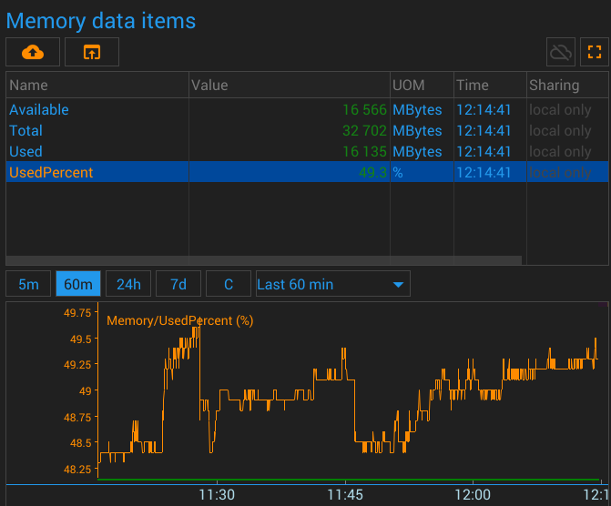
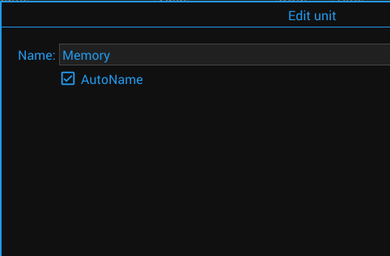

{#header.html#}
{%title=Gazer - Unit - Memory%}
{%description=Gazer - Unit for monitoring RAM usage%}
Computer Memory Unit
Description
The unit gets the computer's RAM usage and writes it to the data items.
Parameters
Data Items
The sensor writes the measured parameters to the following data items:
Total
Available
Used
UsedPercent
Pictures
Screenshot

Configuration

{#bottom.html#}